Гитарный тренажёр v10 — сборка
4 тележки на тросиках · 4 мотора NEMA 14 · печать по Print\README.txt
устанавливаемая деталь
крепёж: винты, оси, штифты
направление установки
тросик (шнур 0.5 мм)
0Что собираем
Гриф из 5 печатных слоёв с 4 тележками (оранжевые) едет на деку с 4 моторами
NEMA 14 и барабанами (синие). Каждую тележку тянет петля тросика от своего мотора.
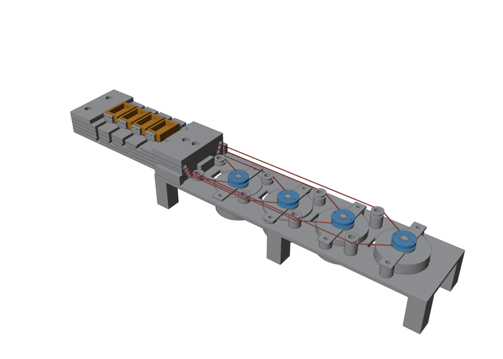
1Слой L1: угловые ролики и первый трос
- Положи слой L1 канавками вверх.
- Вложи 2 угловых ролика (оранжевые) в круглые карманы.
- В каждый ролик сверху воткни ось — кусочек филамента 1.75 мм, ~4 мм (синие), в лунку на дне кармана. Сверху ось запрёт следующий слой.
- Уложи трос тележки 1 (красный) на дно каналов: вдоль грифа, вокруг ролика, наружу через торец поперечной дорожки. Трос проходит между роликом и краем грифа!
- Концы выведи наружу: конец A — в борт со стороны канала A, конец B — в противоположный. Оставь запас по ~250 мм с каждой стороны.
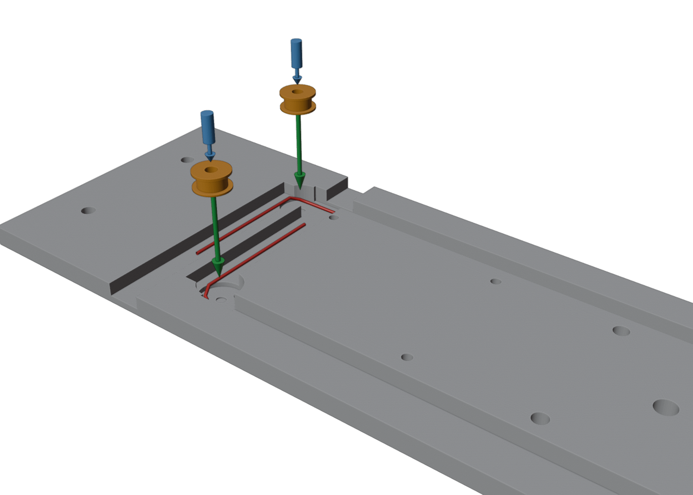
Вид сверху — как идёт трос вокруг роликов:
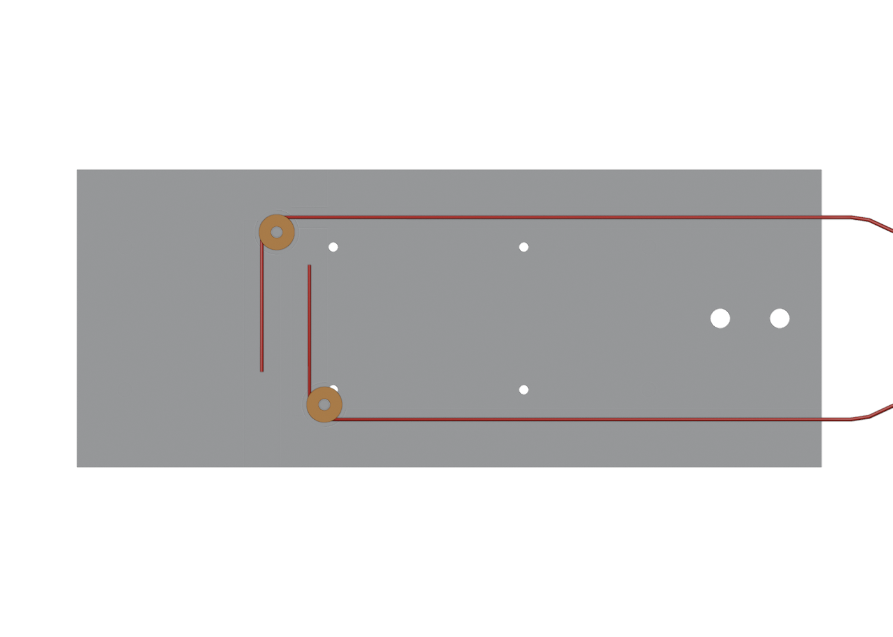
2Слои L2, L3, L4 — так же, друг на друга
- Опусти L2 на L1 — выемки в его подошве запирают оси роликов нижнего слоя.
- На L2 повтори шаг 1: 2 ролика + оси + трос тележки 2. Затем L3 (трос 3) и L4 (трос 4).
- Порядок: слой 1 = тележка 1 (ближняя к голове грифа) … слой 4 = тележка 4. Чем выше этаж, тем ближе к краю его канал.
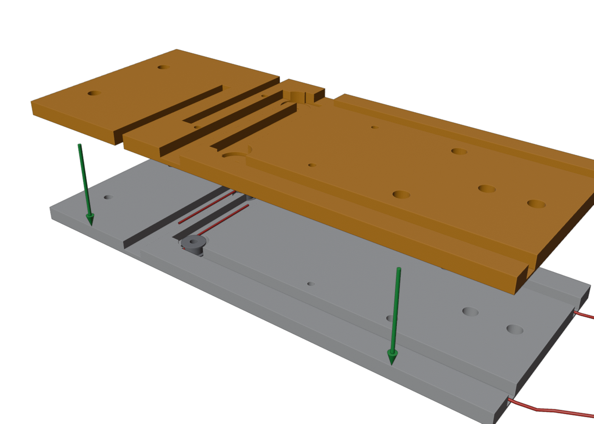
3Крышка L5, штифты и стяжка
- Накрой стопку слоёв крышкой L5 (полкой в зоне тележек).
- Вставь 4 штифта-филамента 16 мм (синие тонкие) в отверстия X=43 и 75.
- Стяни гриф 4 винтами M3×20 по углам (X=8 и 96), головки в потаи сверху.
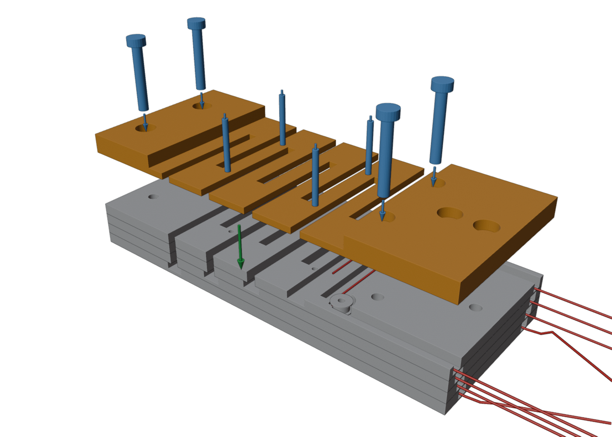
4Тележки и плавники (v10)
4a. Поставь корпус тележки (одинаковый ×4, дно 2 мм / стенки 5 мм) на полку между щелями своего ряда. В стенках — по 2 отверстия под плавники с каждой стороны.
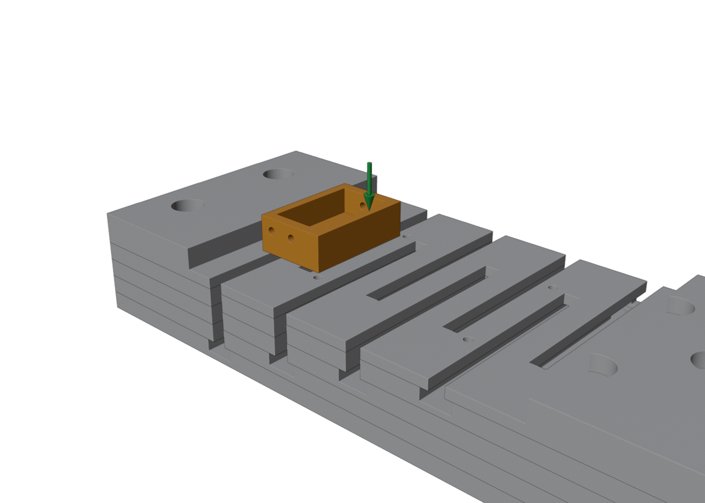
4b. Плавник заведи пяткой с торца борта в щель своего ряда и задвинь к тележке. Пластина ложится на стенку стакана снаружи — прикрути 2 винтами M2×5…6 горизонтально (самонарез в стенку).
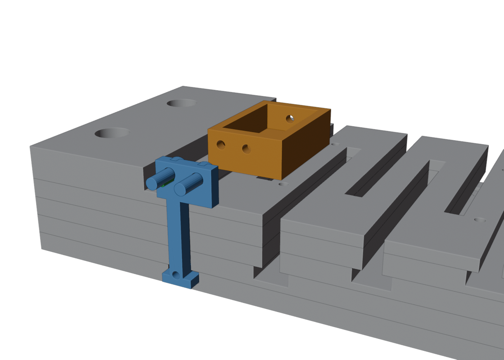
Трос вяжется в дырочку Ø1.5 над Т-пяткой: продень конец, затяни
компактный двойной узел (выше пятки плавник ходит в щели шириной 3 мм — пухлый узел
будет цеплять). Можно вязать и после прикрутки плавника. Длина плавника своя на каждый этаж:
f1 — самый длинный (тележка 1 у головы), f4 — самый короткий.
5аРельсы и упор на деку
- Рельсы и упор печатаются отдельно (v9.2 — чтобы дека ложилась на стол плоско, без поддержек).
- Вложи 2 рельсы в карманы 0.5 мм вдоль бортов и упор в карман по центру у торца.
- Прикрути снизу сквозь плиту 6 винтами M3×8 — в деталях глухие пилотные отверстия, винт нарезает резьбу сам.
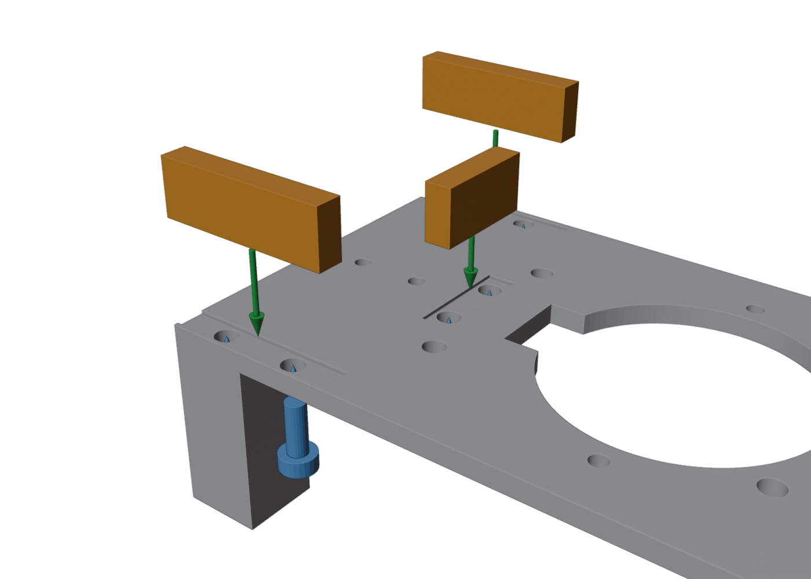
5бГриф на деку
- Опусти гриф на рельсы деки до упоров торца.
- Прикрути 2 винтами M3×25 по центру грифа (X=108 и 118) насквозь в деку.
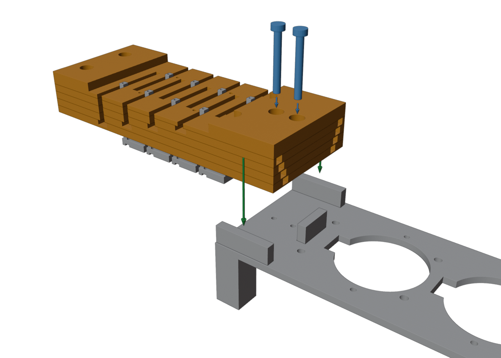
6Моторы и столбики-подъёмы (v9.7)
- Моторы 2–4 стоят выше — под каждое ухо подкладывается столбик (так все барабаны одинаковые):
m1 — без столбиков, винты M3×6…8;
m2 — столбики 1.25 мм, M3×8;
m3 — 4.75 мм, M3×10;
m4 — 8.25 мм, M3×12…14.
- Опусти мотор в колодец сверху, разъём — в вырез к грифу. Винт идёт сквозь ухо и столбик в то же отверстие плиты (самонарез).
- Мотор k тянет тележку k: ближний к грифу — тележку 1 (нижний этаж).
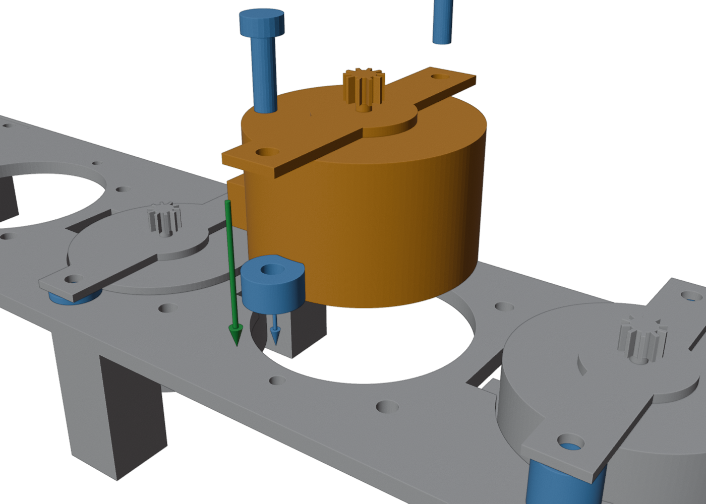
7Барабаны-стопки (v9.7)
- Все 4 барабана одинаковые и собираются из плоских деталей прямо на шестерне
(её зубья входят в звёздочку и выравнивают стопку): кольцо → кольцо → крышка.
- Между слоями — капля суперклея на торец ядра (ближе к центру, чтобы не затекла в ручей). Прижал — готово.
- Шестерня должна входить в звёздочки от руки. Стопка сидит на зубьях — вниз не сползёт.
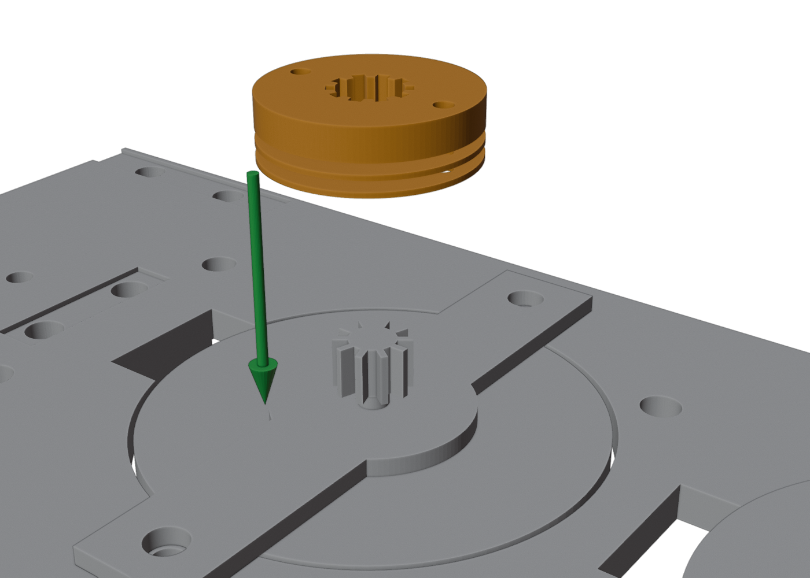
Заправка тросов: узлы и направление намотки —
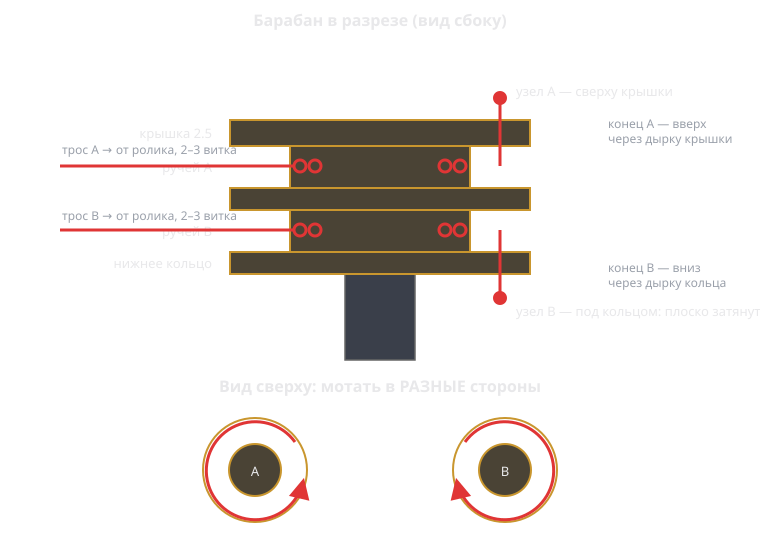
- Конец A — снизу вверх через дырочку крышки, двойной узел сверху.
- Конец B — сверху вниз через дырочку нижнего кольца, узел снизу затянуть плоско
и оплавить зажигалкой в пуговку (под кольцом мало места, а оплавленный PE не развяжется).
- Поставь тележку в середину хода и намотай каждому тросу по 2–3 витка —
в противоположные стороны. Проверка: крути барабан пальцем — тележка ездит, оба троса натянуты.
Если оба тянутся разом — один трос перемотай зеркально.
- Грубая подстройка натяга: снять стопку и переставить на один зуб шестерни (≈3 мм троса).
8Направляющие ролики
- В ролик вставь отрезок латунной трубки K&S 5×0.45 (длины ~5.5/7/10.5/14 мм по моторам 1–4).
- Винт M4 через трубку — самонарезом в отверстие Ø3.3 плиты рядом с мотором (по 2 шт на мотор).
- Не затягивай до упора — ролик должен свободно крутиться на трубке.
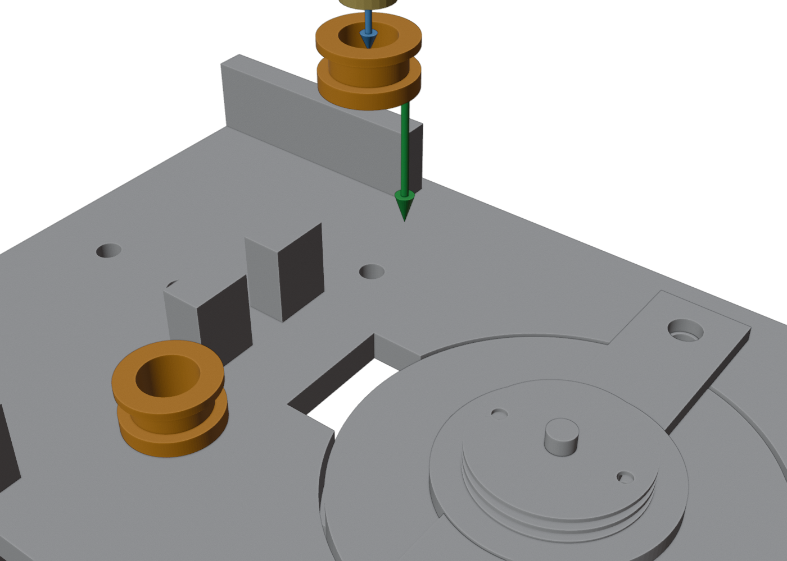
9Разводка тросов к барабанам
- Концы тросов от грифа проведи через направляющие ролики к своему барабану. Дальние тросы идут над ближними роликами — каждый в своём коридоре.
- Конец A — в верхний ручей, B — в нижний; узлы и намотка — по схеме из шага 7.
- Точный натяг: провернуть барабан с проскальзыванием витков до выбора слабины (грубо — перестановкой стопки на зуб шестерни).
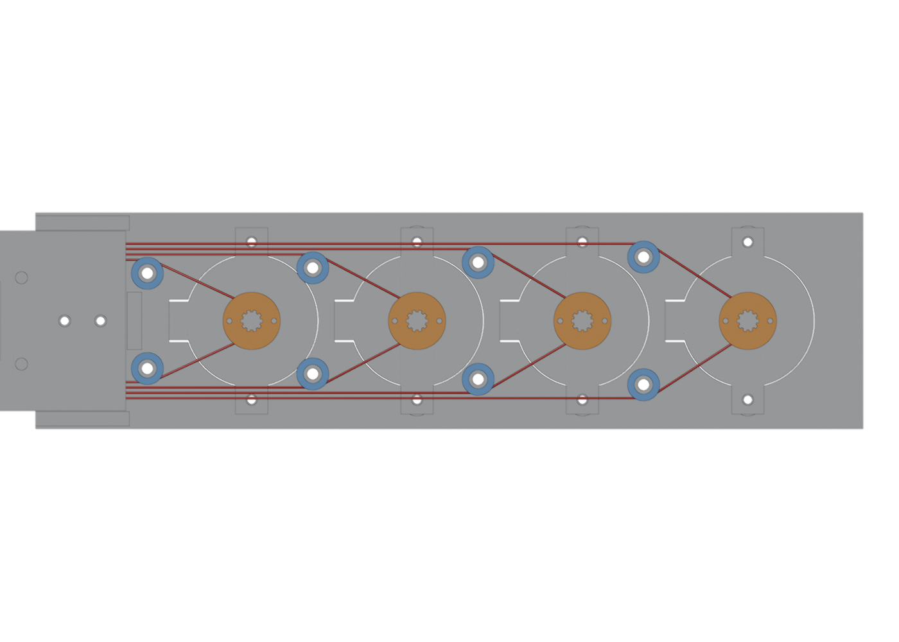
10Проверка
- Тележка должна ездить от упора до упора (±20 мм) при вращении барабана рукой, трос нигде не чиркает.
- Если пятка тележки цепляет ролик в крайнем положении — ограничь ход ±19 мм в прошивке.
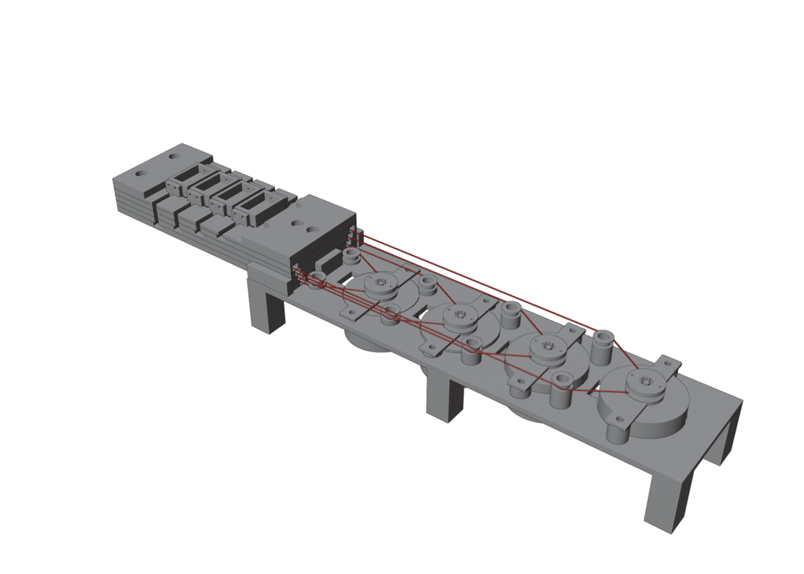
Полный BOM и ориентации печати — в Print\README.txt. Генератор геометрии — trainer_v9.py.